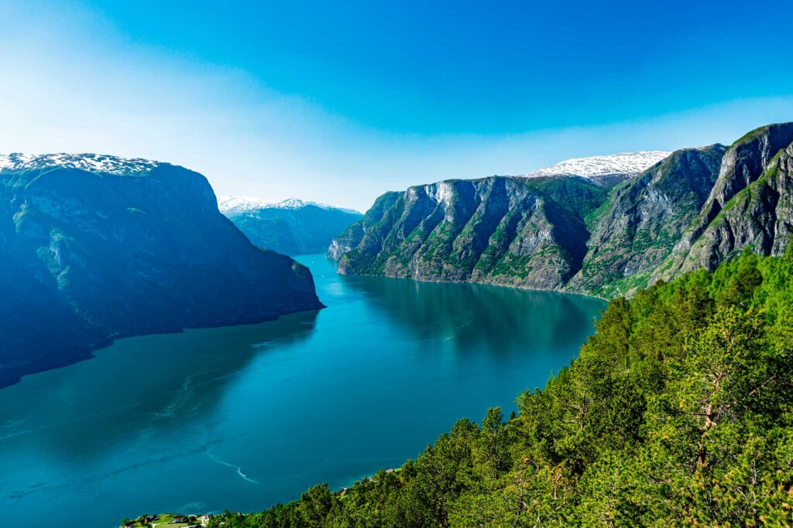
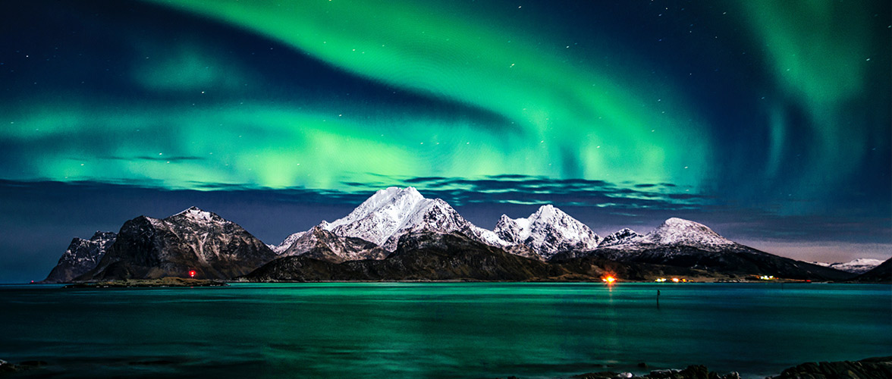
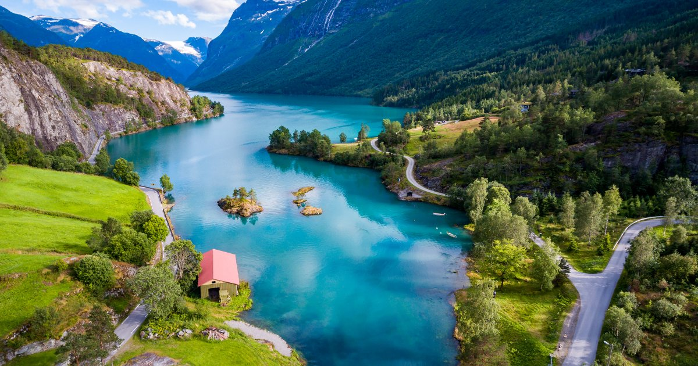
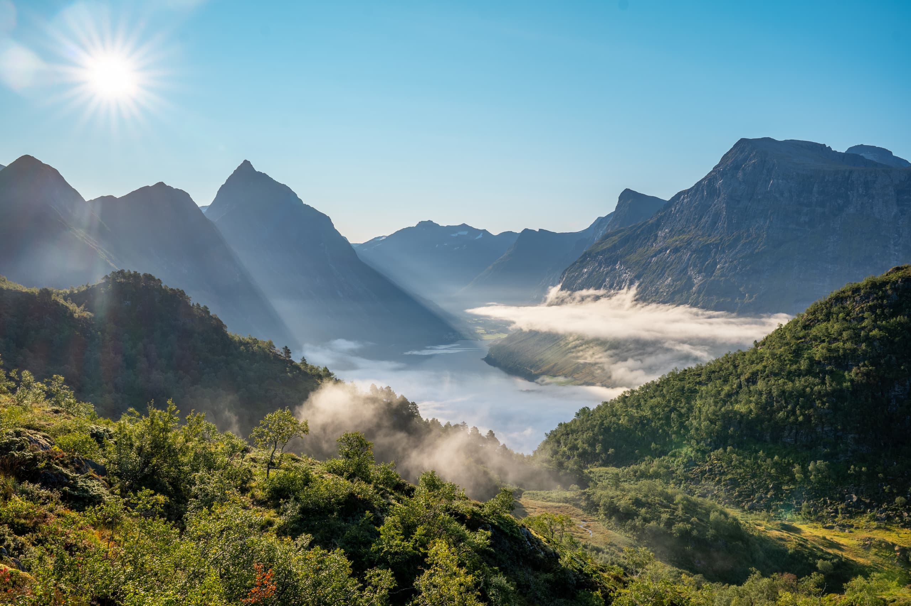
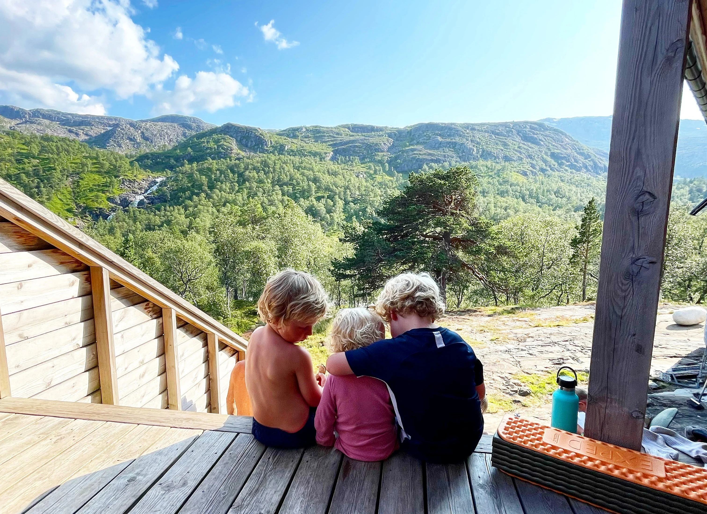
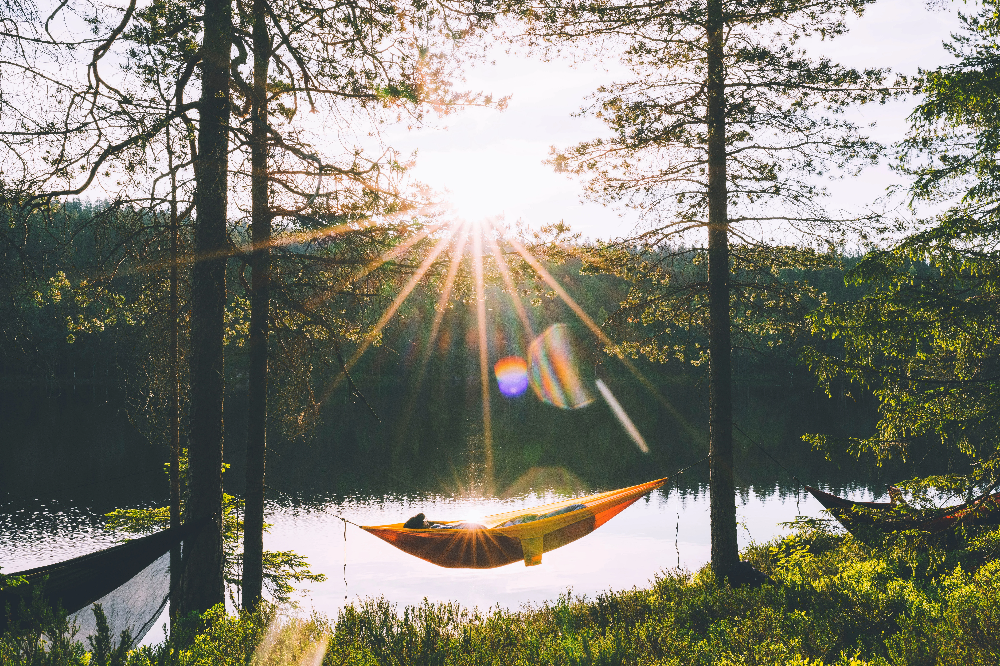
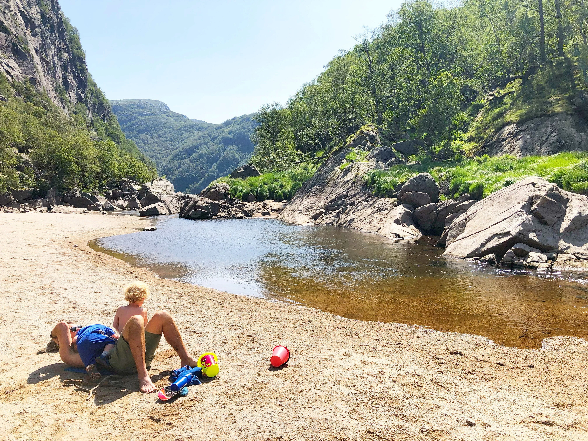
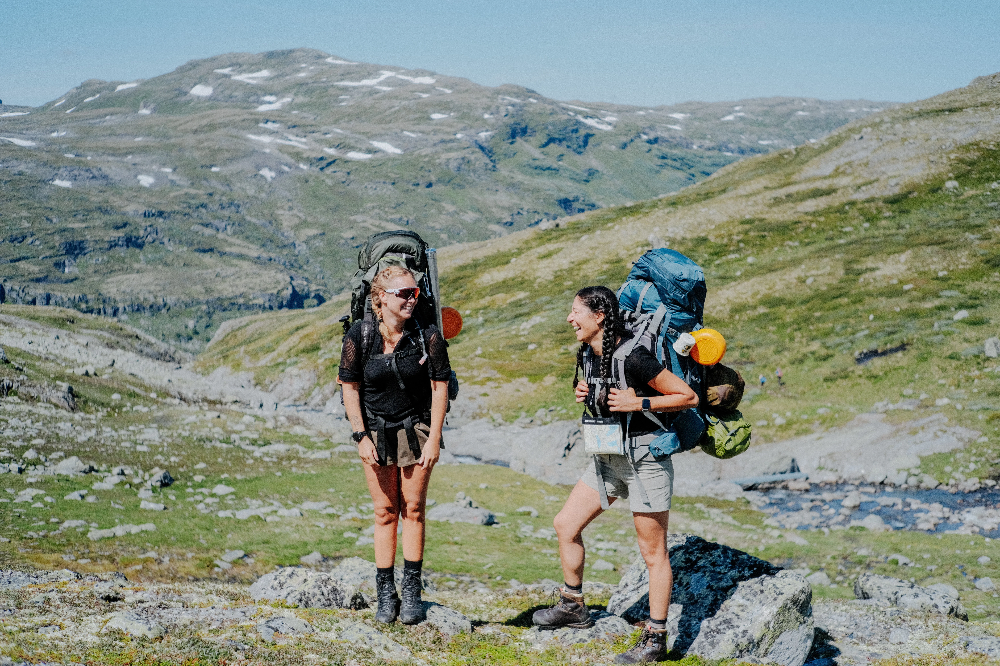

Ut på tur
med DNT - Den Norske Turistforeningen
Norsk natur

Den norske naturen er kjent for å være variert og spektakulær. I Norge finnes det dype fjorder, høye fjell, store skoger og lange kystlinjer. Mange av fjordene ble dannet under istiden, da store isbreer skar seg gjennom landskapet. Den lengste og dypeste fjorden i landet er Sognefjorden.

Norge har også mange nasjonalparker som beskytter naturen og dyrelivet. I fjellområdene kan man finne dyr som reinsdyr, fjellrev og kongeørn. Store deler av landet har kaldt klima om vinteren, og i nord kan man oppleve nordlys i mørketiden.

Skogen dekker omtrent en tredjedel av Norge. Trær som gran og furu er vanlige, og skogene gir leveområder for dyr som elg, bjørn og ulv. Mange nordmenn bruker naturen aktivt til friluftsliv, som turer, ski og camping.

Langs kysten finnes tusenvis av øyer og mange fiskesamfunn. Havet har alltid vært viktig for Norge, både for fiske og transport. Byer som Bergen og Tromsø er kjent for nærheten til naturen og havet.
Tips til når du skal på tur
De beste tipsene for billig ferie i Norge
Slik får du en rimelig ferie!
Det trenger ikke å være dyrt å feriere i Norge, DNTs enkle hytter, utlånsordninger og ferie med friluftsliv gir mange muligheter for deg som vil ha ferie på budsjett!
- 1. Legg ferien til selv- og ubetjente hytter
- 2. Sov i gapahuk, telt eller hengekøye i skogen
- 3. Dagsturer gir feriefølelse i fleng
- 4. Hytte til hytte-tur er en rimelig ekspedisjon
- 5. Lån eller lei utstyret du trenger
- 6. Reis kollektivt
- 7. Utforsk delingshytter langs kysten
- 8. Fellestur og kurs for unge




Spill utstyrspillet her!
Norges nasjonalparker

Hallingskarvet nasjonalpark

jostedalsbreen nasjonalpark

Østmarka nasjonalpark

Nasjonalparkene på Svalbar

Lofotodden nasjonalpark

Jotunheimen nasjonalpark

Hardangervidda nasjonalpark